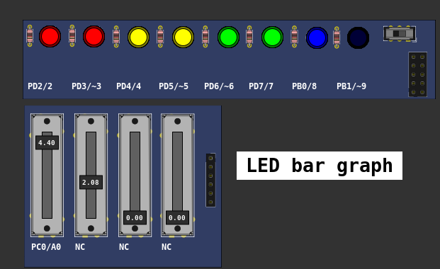
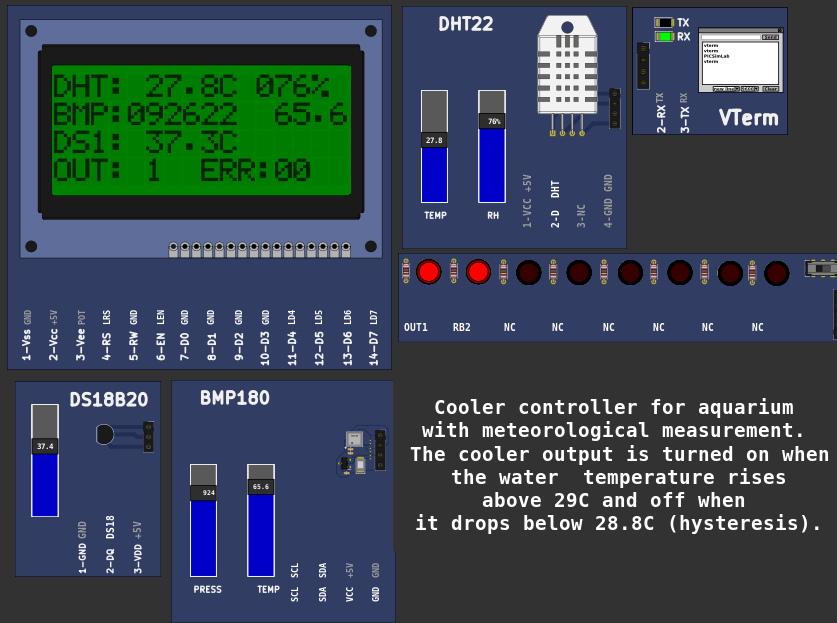
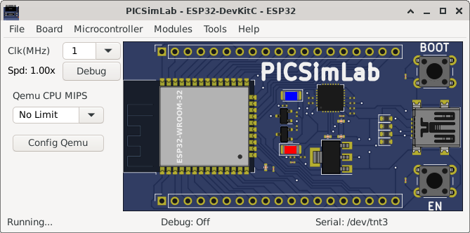

[Arduino_Uno/atmega328p/display_bargraph] LED bar graphTurns on a series of LEDs based on the value of an analog sensor. This is a simple way to make a bar graph display. Though this graph uses 10 LEDs, you can use any number by changing the LED count and the pins in the array. This method can be used to control any series of digital outputs that depends on an analog input. The circuit: - LEDs from pins 2 through 9 to ground created 4 Sep 2010 by Tom Igoe This example code is in the public domain. http://www.arduino.cc/en/Tutorial/BarGraphbarGraph.ino | |
|  | Download (pzw)
View Online |
[Arduino_Uno/atmega328p/game_marduino] Super Marduino* Super Marduino * A platform game with Arduino Uno. * * Requirements: * Nokia 5510 display and three buttons. * Additional libraries: Adafruit GFX and Adafruit_PCD8544. * * Created by Tobias Beise Ulrich * * GitHub: * https://github.com/tobiasbu/marduino Play using gamepad: Select or Jump: A button (mapped as computer keyboard "i" key) Right : B button (mapped as computer keyboard "l" key) Left : D button (mapped as computer keyboard "j" key) marduino source | |
 |
Download (pzw)
View Online |
[Breadboard/PIC18F4620/Aqua18F]Cooler controller for aquarium with meteorological measurement.The cooler output is turned on when the aquarium water temperature rises above 29C and off when it drops below 28.8C (hysteresis).MPLABX Aqua18F project | |
|  | Download (pzw)
View Online |
[ESP32_DevKitC/ESP32/NuttX_led] Blink LED no ESP32 com o RTOS NuttXExemplo simples de como piscar um LED utilizando o RTOS Nuttx no ESP32 escrito por Sara Monteiro. | |
 |
Download (pzw) |
[ESP32_DevKitC/ESP32/SimpleWifiServer] WiFi Web Server LED BlinkA simple web server that lets you blink an LED via the web. This sketch will print the IP address of your WiFi Shield (once connected) to the Serial monitor. From there, you can open that address in a web browser to turn on and off the LED on pin 5. If the IP address of your shield is yourAddress: http://yourAddress/H turns the LED on http://yourAddress/L turns it off This example is written for a network using WPA encryption. For WEP or WPA, change the Wifi.begin() call accordingly. Circuit: * WiFi shield attached * LED attached to pin 5 created for arduino 25 Nov 2012 by Tom Igoe ported for sparkfun esp32 31.01.2017 by Jan Hendrik Berlin On PICSimLab qemu-esp32 simulator the Web server address is mapped in http://localhost:16555 Source code | |
|  | Download (pzw) |
[STM32_H103/stm32f103rbt6/SysTick] beckus stm32 p103 demos - SysTick exampleUses the Cortex NVIC system tick timer to flash the LED.Source code | |
 |
Download (pzw) |